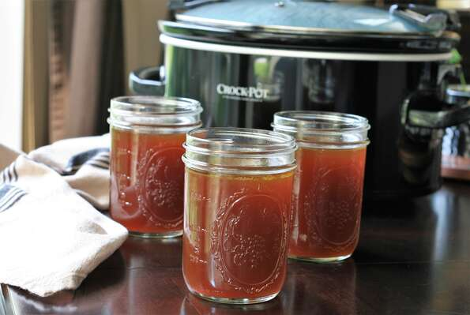

Slow Cooker Chicken Broth - Great for Gut health
This slow-cooked bone broth uses roasted bones and unpeeled veggies, which produces a much deeper flavor and darker color.
For a lighter-colored broth, omit the roasting step and use peeled veggies. The longer this simmers, the richer it gets,
however don't go longer than 48 hours as the flavor can turn bitter. Make sure about half your bones are collagen-rich,
such as chicken backs, feet, or wings. Season with additional salt, if desired, upon serving.
Ingredients
- 3 pounds assorted chicken bones
- 6 cloves garlic, unpeeled
- 2 unpeeled carrots, cut into chunks
- 2 stalks celery with leaves, cut into chunks
- 1 onion, unpeeled and quartered
- 2 tablespoons olive oil
- 2 tablespoons apple cider vinegar
- 2 bay leaves
- 1 teaspoon sea salt
- ½ teaspoon black peppercorns
- 12 cups water, or as needed
Directions
- Preheat the oven to 400 degrees F (200 degrees C).
- Place chicken bones, garlic cloves, carrots, celery, and onion on a baking sheet and drizzle with olive oil. Toss to coat.
- Roast in the preheated oven for 30 minutes, stirring halfway through.
- Transfer roasted bones and vegetables into a 6-quart slow cooker. Add vinegar, bay leaves, salt, and peppercorns.
Cover completely with water and cook on Low for 24 to 48 hours, adding 1 to 2 cups more water during the cooking process,
to keep bones submerged.
- Strain broth using a fine mesh strainer. Pour into jars and refrigerate until ready to use.
Return to the top of the page
Return to the Homepage